C 端痛点
发现晚
猫会隐藏疼痛和不适，许多家长察觉异常时已经比较晚。
九龄猫连接家庭健康监测与宠物医院院外随访。两条产品线共用同一套引擎：拍照 / 记录 → 参照兽医量表评分 → 与这只猫的历史对比 → 分级建议。
猫会隐藏疼痛和不适，许多家长察觉异常时已经比较晚。
小红书和微信群信息碎片化，轻症怕花冤枉钱，重症又怕耽误。
医生问诊高度依赖家长回忆，缺少连续、客观的健康记录。
医院侧同样缺工具：术后随访多靠医生手动微信沟通，高风险病例容易被淹没。
疼痛表情、便便、呕吐物、牙齿，或术后伤口——猫主人最高频、最容易在家留下的证据。
参照公开兽医量表给出评分与风险提示，而不是一句「看起来不太好」。
结合这只猫过往记录看趋势：缓慢恶化还是突然跳变，决定的是就医时机。
观察 / 问医生 / 就医；术后场景则是红黄绿三色初判，医生优先处理高风险。
C 端是用户与数据入口；B 端切入医院术后随访工作流。微信小程序与 iOS 已上线，商标与软件著作权已获批。
检测模块以公开兽医量表为基础：疼痛参照 FGS，便便参照普瑞纳粪便评分，牙齿参照 GI / CI。输出的是风险评估与分级建议，不是诊断结论。

综合评分 0–18

形态 + 三级分级

普瑞纳 1–7 分

GI / CI 指数

互动功能，非评估
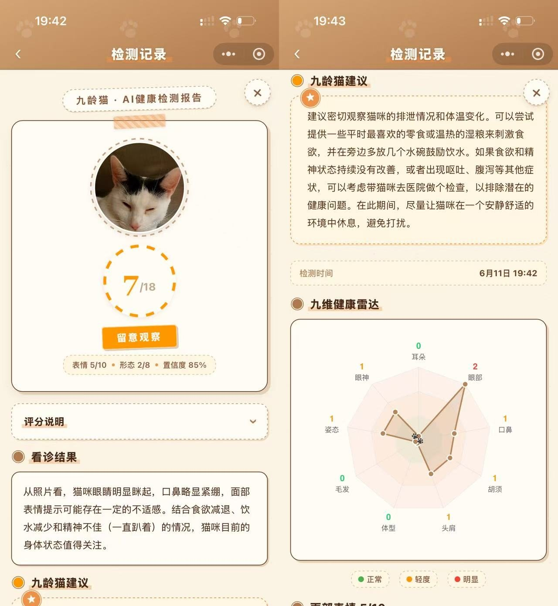
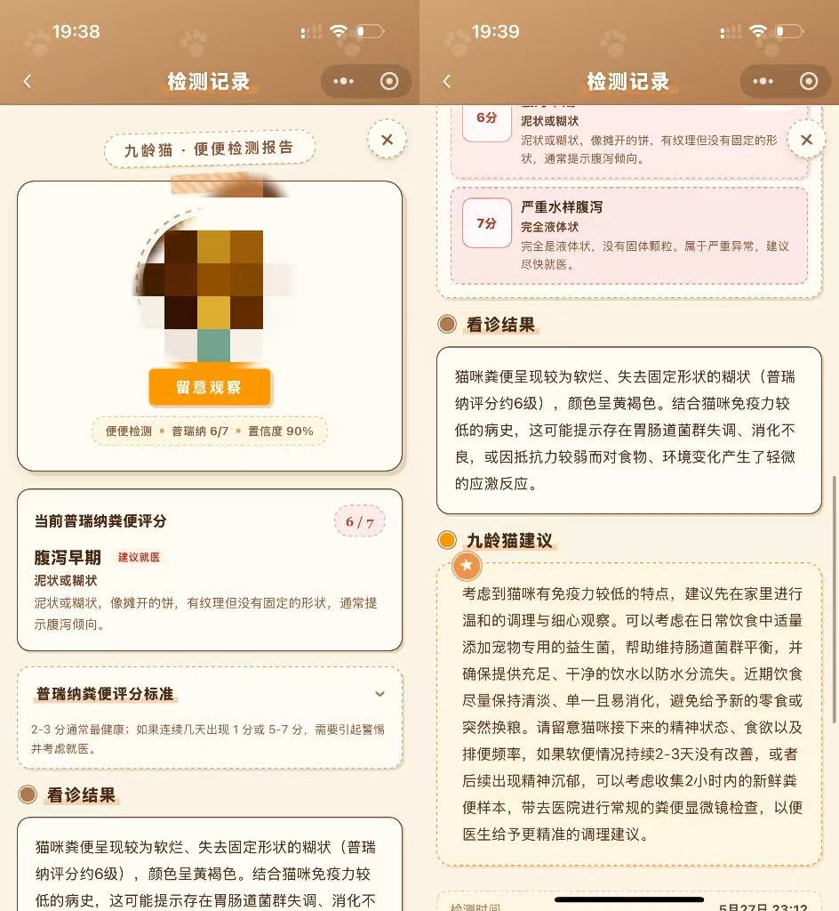
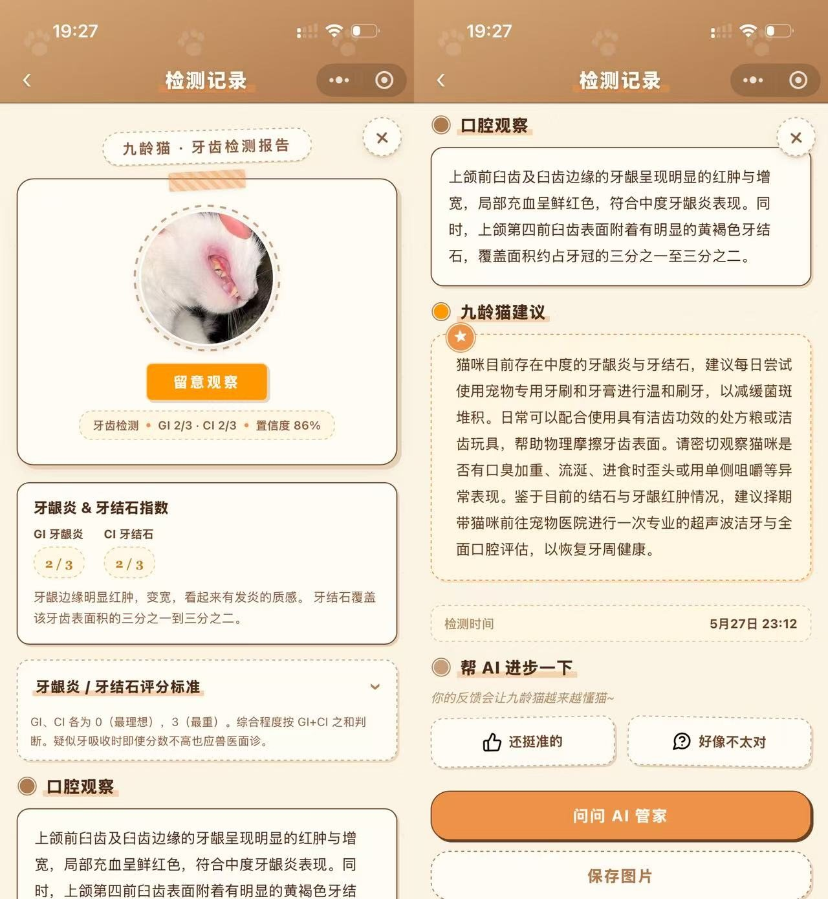
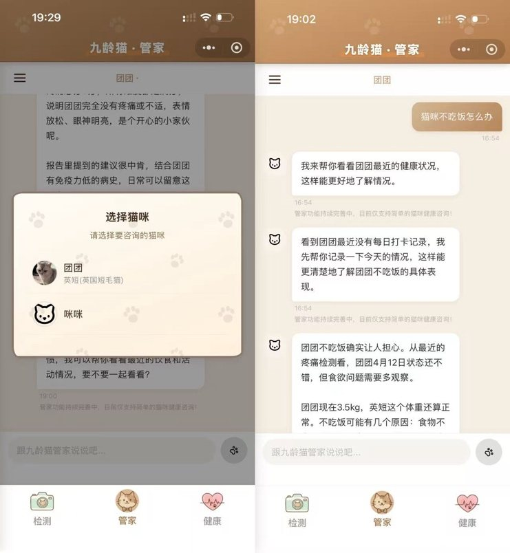
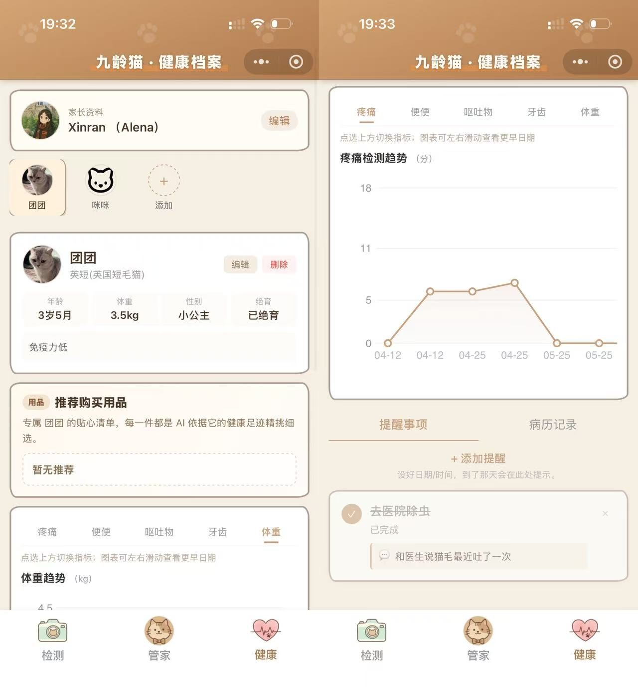
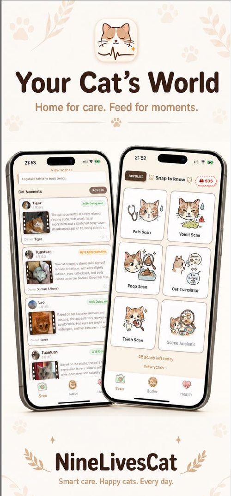
微信搜索小程序「九龄猫」，或在 App Store 下载。结果仅供参考，紧急情况请立即就医。
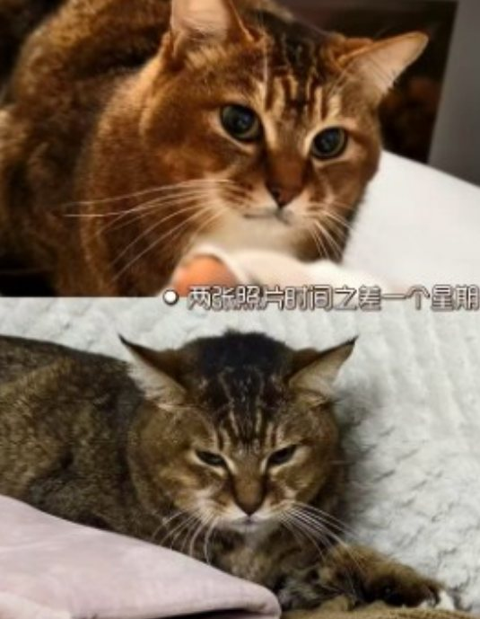
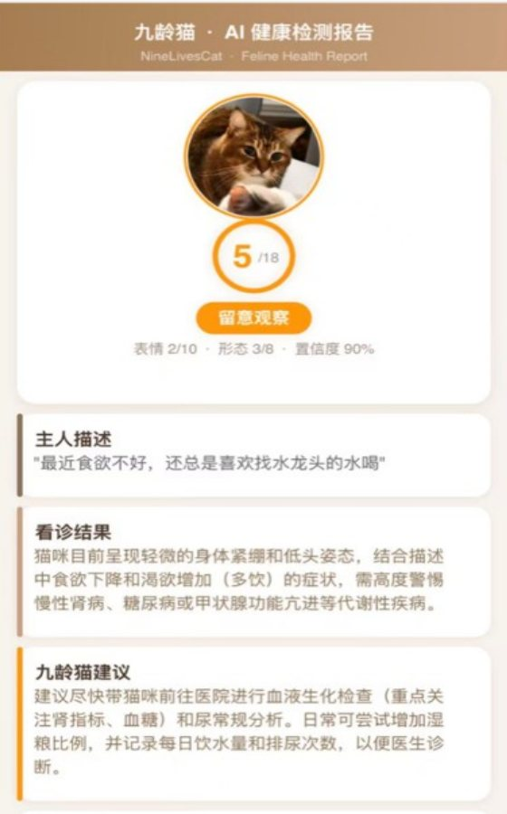
肾衰竭晚期，送到医院时已无法挽回。家长回忆：平时看不出任何问题，就是特别喜欢去找水——水碗明明有水，卫生间、厨房的水龙头都会去舔。
小程序上线后，家长用维他生前的一张照片做了疼痛检测。模型提示整体状态异常，并建议到医院做进一步检查。普通人从第一张照片几乎看不出异常。
这是单一回顾性个案，不构成诊断结论，也不能证明模型识别出了肾病。前瞻性的效果验证将在医院真实病例试点中进行。
很多用户反馈九龄猫在术后照顾上帮了大忙。团队走访杭州宠物医院后，与医院共同设计了术后跟诊：AI 同时协助家长和医生，目标是减少重复回复与低价值沟通。
授权手机号，名下宠物自动绑好；也可扫出院单二维码。不用注册、不用记账号。
伤口红不红、有没有渗出、吃不吃饭——全是选项，再拍一张伤口照片，大约 30 秒。
把前几天记录和照片一起看，重点说变化。红 / 黄 / 绿三级，并标注可信度。
高风险置顶，正常自动折叠。现成话术一键回复，也可通知来院或调整分级。
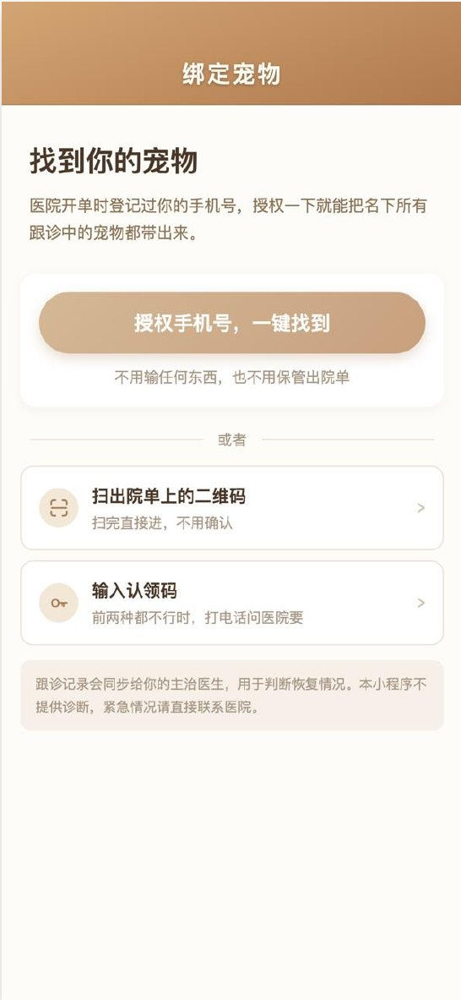
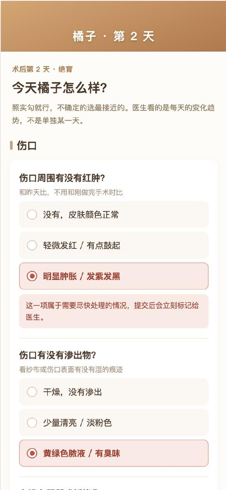
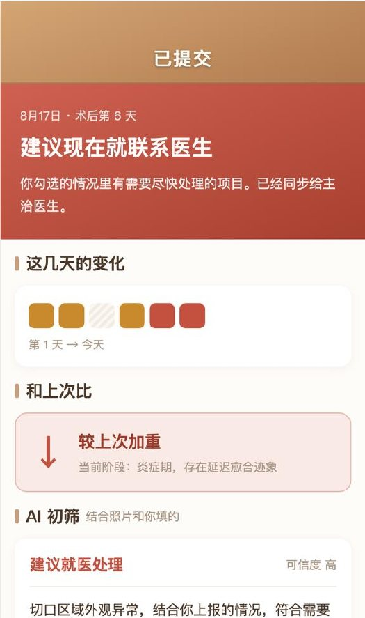
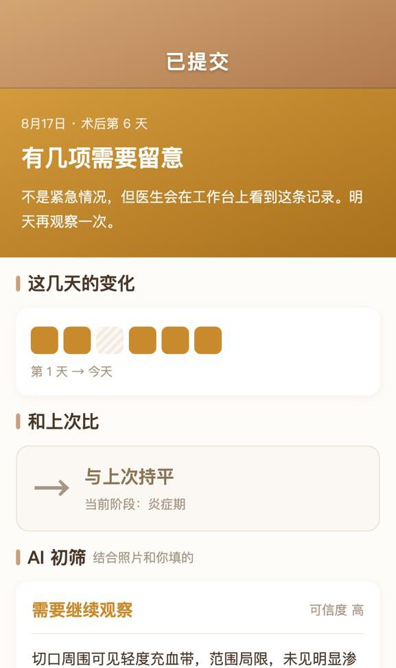
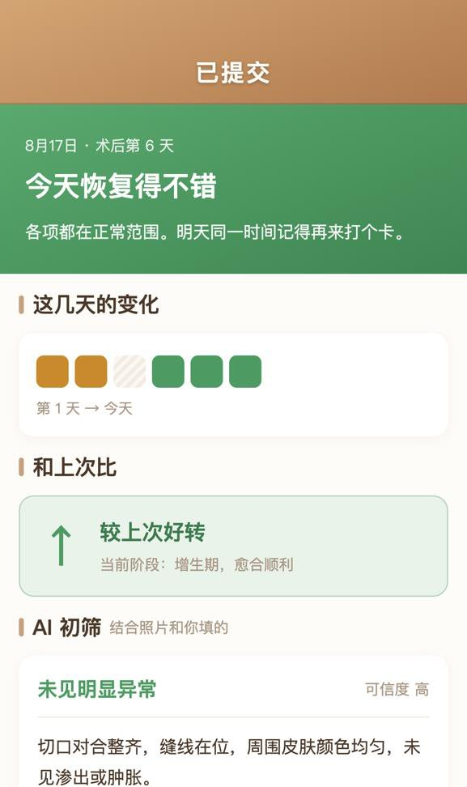
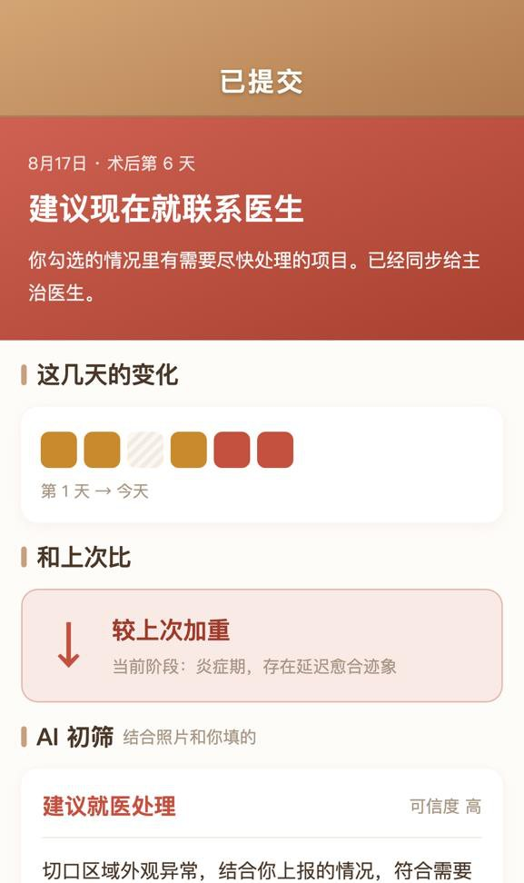
杭州 1 家宠物医院已确认合作，准备启动真实病例试点。合作请邮件 alena@mimi.house。
先用内容验证需求，再写产品。当前主要依靠小红书科普与抖音 AI 短剧自然获客，尚未做规模化付费投放。
《猫是地球上最能忍痛的动物之一》——评论区大量家长直接上传照片求判断。
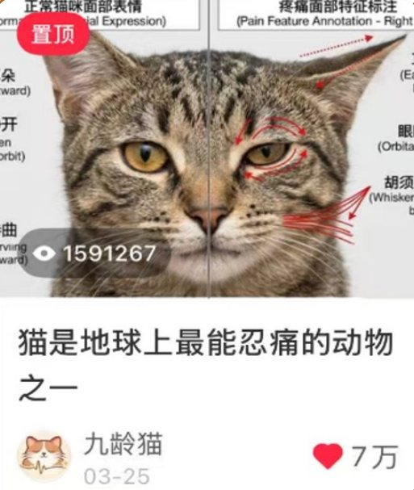
第二个内容渠道，持续把「帮我判断这只猫正不正常」做成可传播的故事。
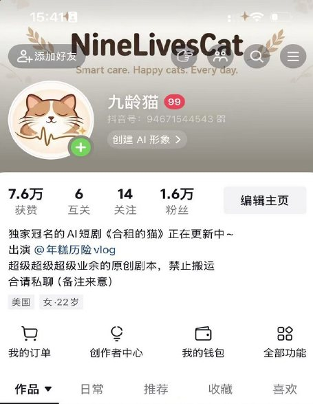
优势是技术执行力与医学 AI 专业能力。企业销售与正规临床背书，是正在补齐的能力。
Yale University · M.S. in Personalized Medicine & Applied Engineering
医学 AI 方向 MICCAI 2026 一作、IEEE TMI 2026 一作、NeurIPS 2025 二作。核心产品早期由其独立完成：算法与模型、后端、多端 App 与内容运营。
Yale University · M.S. in Computational Biology and Bioinformatics（在读）
负责对外关系、融资与商务合作。
浙江大学 · 人工智能博士（在读）
算法设计与模型训练。
Stanford University · M.S. in Electrical Engineering（在读）
观察加州商业环境，探索未来硬件落地的可行性。